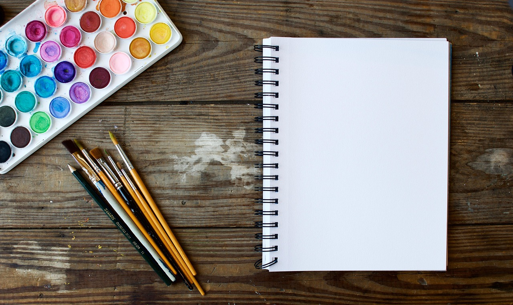

My Hobbies
- Drawing
- I love drawing because I get to be be creative and learn techniques. 
- Playing piano
- I love playing piano because I enjoy making music and learning notes.
- Lego building
- I love building legos because they feel easy to hold and really inspires me to think creatively with the limited pieces I have.


© 2025 | Julianne Sophia A. Canuday | ICT 9 Emerald